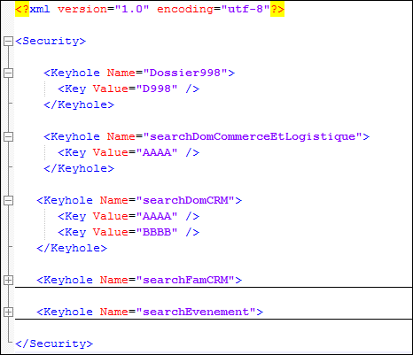

Le fichier Search_Security.xml se trouve dans le répertoire des paramètres d'un serveur Search.
Lorsque ce fichier est absent ou "vide" aucune gestion de confidentialité n'est mise en oeuvre. Tous les documents de la base Search sont accessibles à tous.
Prise en compte de la modification des paramètres
L'ajout de ce fichier ou la modification de son contenu nécessite la "relecture des paramètres d'indexation" par la console Search. Le redémarrage du service Search concerné prend également en compte les modifications mais on privilégiera la relecture des paramètre afin de ne pas perturber les utilisateurs connectés au serveur.
Contenu
Il contient la correspondance entre les noms des serrures associées aux documents dans la base Search et les codes d'accès (Clefs) de l'utilisateur permettant d'ouvrir ces serrures (donc d'accéder aux documents).
Une même serrure peut avoir plusieurs clés.

L'attribut Name de la balise <Keyhole> indique le nom de la serrure.
L'attribut Value de la sous-balise <Key> indique la valeur du code de confidentialité.
Ainsi dans l'exemple ci-dessus :
Le code "D998" permet d'ouvrir la serrure "Dossier998"
Le code "AAAA" permet d'ouvrir les serrures "searchDomCommerceEtLogistique" ET "searchDomCRM"
Le code "BBBB" permet également d'ouvrir la serrure "searchDomCRM
Attention
Si une serrure a été positionnée sur un document par la balise <Security> et qu'elle n'apparaît pas dans une balise <Keyhole> du fichier Search_Security.xml, ce document ne sera visible par AUCUN utilisateur. Donc lors de la mise en oeuvre des confidentialités assurez-vous que pour chaque document, au moins une des serrures positionnées au niveau des documents soit présente dans ce fichier paramètres.